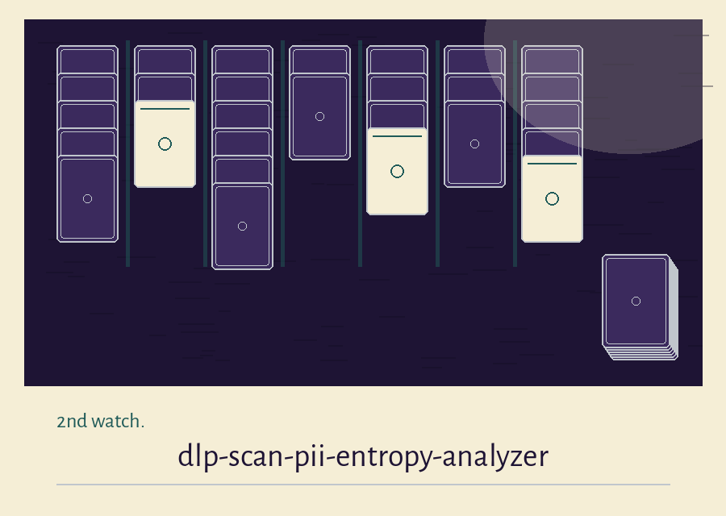
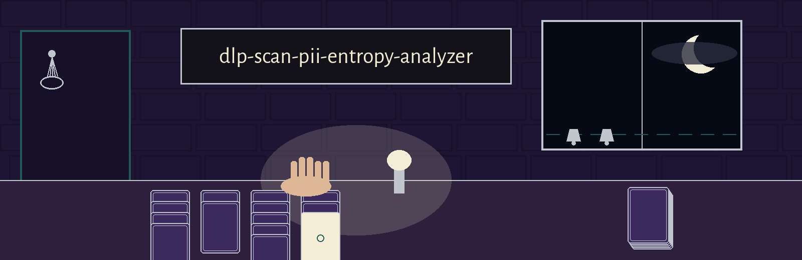

dlp-scan-pii-entropy-analyzer: The Lighthouse Keeper's Card School
This site names itself dlp-scan-pii-entropy-analyzer: The Lighthouse Keeper's Card School at every self reference. The page is arranged as a night watch log, one entry per watch, ruled as it goes.


Four Shapes Sought
Randomness Weighed by the String
Skipped Files Are Named in the Log
Masked at Every Length
One Exit for a Finished Watch
First entry: the work
The program scans one file, or every file under one directory, hunting two kinds of trouble. It matches four written pattern shapes for personal and credential material. It also measures word length strings for randomness. Anything it finds goes into a report file, always masked, never in clear.
Second entry: Four Shapes Sought
The four pattern shapes are named in words here, never as copied values, and this site prints no detected value of any kind. A card number shape: thirteen to sixteen digits, spaces or hyphens allowed between them. An application key shape: a run of thirty two to forty five word characters or hyphens, word characters being letters, digits, and the low line character. A social security shape: digits grouped three, two, and four, hyphen split. An electronic mail shape: a local part, an at sign, a domain, a suffix of at least two letters. One stretch of text may be counted under several shapes at once. The report counts per pattern, not per distinct secret.
Third entry: Randomness Weighed by the String
Candidates are runs of word characters at least twelve long, split at punctuation and spaces, so a secret broken by punctuation is never measured whole. Each candidate gets a Shannon entropy score. A candidate at or above the threshold is listed, masked to asterisks of its own length, with its score printed to two decimal places. The same string found five times is listed five times.
Fourth entry: the needs
Python 3. Two packages, named in the requirements file: chardet at 5.2.0 or later, and python-magic at 0.4.27 or later. Both are imported at the top of main.py, alongside the magic binding, so a machine missing either package stops at import, before help can print. One quiet condition the README leaves out: python-magic leans on the system libmagic library, which no requirements line installs.
Fifth entry: install, corrected
On this site only, the clone line is corrected in the open, as a repair. The README line as printed is wrong in its organisation. The corrected line names the true organisation, ShadowGuard-AI, hyphenated, and ends with the repository suffix: git clone https://github.com/ShadowGuard-AI/dlp-scan-pii-entropy-analyzer.git
Sixth entry: the working form
The working form is python3 main.py, then the scan path, then any options. The path is positional and required, though the README parameter list forgets it; this site restores it at the head of the controls. Then, in parser order: report, whose path defaults to dlp_report.txt; mask, a compatibility flag that changes nothing because masking is always on; delete, which asks before removing any file; and entropy_threshold, a number defaulting to 4.5. Help closes the list.
Seventh entry: a scan, walked
File type is read first through the magic binding. A file whose type carries no text is skipped and the skip is logged. Encoding is guessed from the raw bytes. No guess means a skip. A decode failure means a skip. Directories are walked in full, root by root, every file offered to the same treatment. Skipped Files Are Named in the Log.
Eighth entry: the report, honestly
The report opens with a report heading, then one block per file that produced findings: the file path, each pattern type with a position and an asterisk string of the matched length, then any high entropy strings with their scores. No severity grade exists anywhere in it. The README introduction promises severity; the code writes none, and this site does not pretend otherwise. Masked at Every Length.
Ninth entry: deletion, with care
With delete set, the program asks once per matching file, at the keyboard, while the report is still open. An answer of the single letter y, either case, removes the file and the report records the removal. Any other answer keeps the file and the report records the refusal, again with no value written. With no terminal attached, the question itself fails, the file is kept, and the failure is logged as a processing error for that file.
Last entry: endings and licence
One Exit for a Finished Watch. Exit 0 belongs only to a scan that dispatched and completed. A missing path exits 1. A path that is neither file nor directory exits 1. A failure while opening the report exits 1. But an error inside one file of a directory scan is caught, logged, and the walk goes on, so the exit line stays 0 even then; the README exit note claims more than that, and this entry states the narrower truth. Licence follows: the README licence line is printed as it stands in the preserved record below, Copyright (c) ShadowStrikeHQ, and beside it a separate fact is recorded. The LICENSE file in the repository carries the MIT License. Its holder line gives a pen name first, a parenthetical given name with a single initial after it, and a handle last. The initial is not expanded here.
The preserved README record
 # dlp-scan-PII-Entropy-Analyzer Analyzes text files for high entropy strings that might indicate leaked cryptographic keys or other sensitive data based on Shannon Entropy. - Focused on Scans local directories and files for sensitive data patterns (e.g., credit card numbers, API keys, PII) using regular expressions and file type identification. Generates reports detailing detected leaks and their severity, with detected values always masked in the report, or deletion (with proper confirmation). ## Install `git clone https://github.com/ShadowStrikeHQ/dlp-scan-pii-entropy-analyzer` ## Usage `./dlp-scan-pii-entropy-analyzer [params]` ## Parameters - `-h`: Show help message and exit - `--report`: Path to save the report. - `--mask`: Mask detected sensitive data in report. Masking is now always on, with or without this flag: detected values are never written to the report in clear. The report keeps the file, the pattern type, the position, and the masked length (asterisks). This flag is kept so old commands still run; it changes nothing. - `--delete`: No description provided - `--entropy_threshold`: Entropy threshold for considering a string as high entropy. ## Exit status Exit 0 and the "Scan complete" line are reserved for runs that actually dispatched and completed a scan. A scan path that is neither a file nor a directory, and any unexpected error during a run (for example a report path in a directory that does not exist), exit 1. A missing scan path also exits 1. The --delete option still prompts per file and deletes only on an exact y answer; a declined answer deletes nothing and is recorded in the report without any detected value. ## License Copyright (c) ShadowStrikeHQ